Breadth-first search and PageRank on the M2 GPU
Two of the most common graph algorithms, written from scratch as Metal kernels for an 8 GB MacBook, measured against OpenMP CPU code and the GAP Benchmark Suite on six real graphs with up to 234 million edges. Every GPU answer is checked against a CPU reference.
Why graphs are hard for a GPU
A GPU is fast when thousands of threads do the same work on neighbouring memory. Graph algorithms break all three of those conditions.
Irregular memory access
Following an edge means reading the data of a vertex that can live anywhere in memory. We measured that the M2 GPU streams 95 GB/s sequentially but manages only 0.28 billion random 4-byte reads per second once the data exceeds the 8 MB cache, about 40× less.
Load imbalance
Social networks have a few "hub" vertices with tens of thousands of neighbours and millions with a handful. If one thread handles one vertex, the thread that draws a hub works thousands of times longer than its neighbours.
Synchronisation
BFS proceeds level by level, and each level needs a round trip between CPU and GPU (we measured 111 µs). A road map has about 600 levels, so this cost can dominate.
Little work per byte
Both algorithms do almost no arithmetic per edge. Speed is decided by memory traffic and latency, so the relevant comparison is against memory bandwidth, not compute.
Research questions
- How close can BFS and PageRank get to the M2's memory bandwidth, and which kernel designs get there?
- Does Apple's unified memory, where CPU and GPU share the same RAM, make it worthwhile to split one algorithm between them?
- How do the results compare with the best CPU code (the GAP Benchmark Suite), measured fairly on the same graphs?
- Which of the expected effects (load imbalance, sync cost, cache, vertex order) actually show up, and why?
How the pieces work
This section explains every idea the results depend on, from how a graph is stored to why the update order of PageRank matters. The two interactive demos run in your browser.
1. Storing a graph: CSR
Graphs are stored in compressed sparse row (CSR) form: one array col_idx lists every vertex's neighbours back to back, and a second array row_ptr says where each vertex's list starts. Neighbours of vertex v are col_idx[row_ptr[v] .. row_ptr[v+1]]. It is compact (4 bytes per edge) and lets the GPU read a neighbour list as one contiguous run.
2. Breadth-first search, top-down and bottom-up
BFS finds every vertex's distance (in hops) from a source. It works in levels: the frontier is the set of vertices found in the last level, and the next level is every unvisited neighbour of the frontier.
Top-down push
Each frontier vertex scans its neighbours and claims the unvisited ones. Work is proportional to the edges leaving the frontier, which is efficient while the frontier is small.
Bottom-up pull
Each unvisited vertex scans its neighbours and stops at the first one in the frontier. When the frontier covers half the graph, most scans stop after one or two neighbours, so far fewer edges are touched.
Direction-optimizing BFS (Beamer et al., SC'12) switches between the two per level using two thresholds, α = 15 and β = 18, the values the GAP suite uses. Social networks reach most of the graph within 5–6 levels, so the switch saves a lot. Try it on the toy graph below: step through the levels and compare how many edges each direction would examine.
Level 0: the frontier is the source vertex.
| level | frontier | top-down edges | bottom-up edges | chosen |
|---|
Top-down counts every edge leaving the frontier. Bottom-up counts the neighbours each unvisited vertex checks before it finds one in the frontier. The direction rule picks the cheaper one, as GAP's α/β rule does on real graphs.
3. Measuring BFS: GTEPS
Speed is reported as TEPS, traversed edges per second (Graph500 convention): the number of edges in the source's connected component divided by the time. The same numerator is used for every variant, so a bottom-up search that skips edges gets no extra credit. Results are the harmonic mean over 64 fixed random sources, with 5 timed runs each.
4. How the GPU runs a kernel
A Metal kernel launches one thread per item. Threads run in groups of 32 called simdgroups that execute in lockstep; several simdgroups form a threadgroup, and the 10 GPU cores run many threadgroups at once. In practice the GPU processes a large dispatch in waves of tens of thousands of threads. Two design questions follow everywhere:
- Who does a hub's work? One thread per vertex leaves 31 lanes idle while one lane walks a 20,000-entry list. The fixes are to let a whole simdgroup or threadgroup share a large list, or to give every thread the same number of edges (an exclusive scan of the degrees tells each thread which edges are its own).
- When does the CPU have to wait? After each BFS level the CPU must read how big the next frontier is. That commit-and-wait costs 111 µs on its own, and about 0.2 ms per level once setup is included.
5. Unified memory and the hybrid BFS
On the M2 the CPU and GPU share one pool of RAM, so the CPU can work directly on the GPU's buffers with no copy. The hybrid BFS uses this: a level whose work is below a threshold (105 edges) runs on 4 CPU cores in microseconds, and only the big levels go to the GPU. Small levels then cost about 1–90 µs instead of 200 µs.
6. PageRank, push and pull
PageRank gives each vertex a score: the probability that a random surfer, who follows a random out-link with probability d = 0.85 and jumps to a random page otherwise, is on it. It is computed by repeating one update until the scores stop changing:
Push atomics
Each vertex adds its share to every out-neighbour. Many threads add to the same hub at once, so every edge becomes an atomic read-modify-write.
Pull gathers
Each vertex reads its in-neighbours' shares and sums them. One plain read per edge, one write per vertex, no atomics. This won on every graph.
7. Jacobi vs Gauss–Seidel, and why the GPU struggles with the second
The standard update is Jacobi: every vertex reads last iteration's values, so the order does not matter and the GPU can update all vertices at once. Gauss–Seidel updates scores in place, so a vertex can already use the new values of vertices updated before it in the same sweep. The CPU code from GAP does this and needs about 40% fewer sweeps.
On a GPU, vertices in the same wave run at the same time and still read each other's old values. Most of the graph still speeds up, because later waves see earlier ones, but a tightly linked pair processed in the same wave converges only at Jacobi speed. The simulation below shows this on a 1,000-vertex graph that contains one such pair (two vertices that each link only to the other). Phase 13 moves one vertex of every such pair into a second, small pass so it always sees its partner's new value.
| update scheme | rest of graph | the pair |
|---|
Model: 1,000 vertices with mostly forward links plus random ones; GPU waves are 64 vertices; the pair's two ids are adjacent, so they share a wave. This toy has no dangling vertices, so it skips the renormalisation the real kernel needs.
8. Validation
Speed numbers mean nothing if the answer is wrong, so every timed run is checked before it is recorded:
- BFS: every vertex's distance must equal the serial CPU reference exactly, for all 64 sources.
- PageRank: the GPU uses 32-bit floats (Metal has no doubles), so it must be within L1 error 10−4 of a double-precision reference, with relative error under 10−3 on the top 1,000 vertices and scores summing to 1.
- The references themselves were checked against NetworkX (45 of 45 checks; worst PageRank difference 3·10−15).
- Unit tests run every variant on 8 synthetic graphs, including a 100,000-leaf star built to break load balancing and float accumulation. Deliberately broken versions of the kernels were used to confirm the tests catch them.
Hardware and datasets
Apple M2, 8 GB
- CPU: 4 performance + 4 efficiency cores
- GPU: 10 cores, 32-wide simdgroups, up to 1,024 threads per threadgroup
- Memory: 8 GB unified LPDDR5, 102.4 GB/s theoretical
- Measured: 95.3 GB/s GPU read, 64 GB/s CPU read (8 threads)
- Measured: 111 µs per CPU–GPU round trip, 0.6 µs per extra dispatch
Software
- C++17 and Objective-C++, plain Makefile, Homebrew libomp
- Metal shaders compiled at run time (no Xcode), fast-math off
- Python (numpy, pandas, matplotlib, NetworkX) only for plots and checks
- Benchmarks on AC power, Low Power Mode off, other apps closed
| dataset (SNAP) | type | vertices | edges | mean degree | max degree | diameter ≈ |
|---|---|---|---|---|---|---|
| ego-Facebook | undirected | 4,039 | 88,234 | 43.7 | 1,045 | 7 |
| web-Google | directed | 875,713 | 5,105,039 | 5.8 | 456 | 16 |
| roadNet-CA | undirected | 1,965,206 | 2,766,607 | 2.8 | 12 | 773 |
| soc-Pokec | directed | 1,632,803 | 30,622,564 | 18.8 | 8,763 | 10 |
| soc-LiveJournal1 | directed | 4,847,571 | 68,475,391 | 14.1 | 20,292 | 14 |
| com-Orkut | undirected | 3,072,441 | 117,185,083 | 76.3 | 33,313 | 8 |
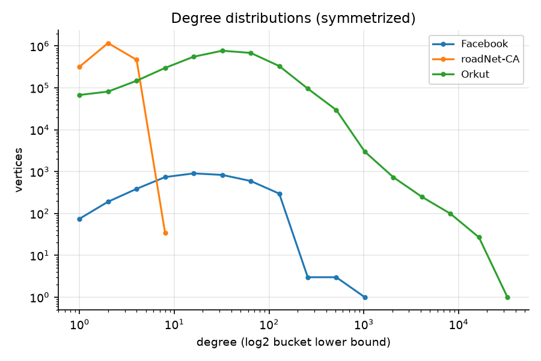
Fourteen phases, one question each
The work was split into phases. Each one ended with a clean build, all tests passing, a log entry and a commit, so every number can be traced to the code that produced it. Phases 12 and 13 go beyond the original plan.
- Environment and scaffold
Confirmed the machine's real limits through the Metal API; set up runtime shader compilation.
- Graph input
Streaming converter from SNAP edge lists to binary CSR, using about 4 bytes of RAM per edge so 234M-edge graphs fit in 8 GB.
- CPU baselines
Serial BFS (the reference), OpenMP level-synchronous BFS, and direction-optimizing BFS.
- Microbenchmarks
Measured bandwidth, random-read rate and dispatch cost, the numbers every later result is judged against.
- First GPU BFS
Thread-per-vertex and thread-per-frontier-vertex kernels; established the validation and timing method.
- Load-balanced BFS
Degree-binned kernels (simdgroup or threadgroup per big vertex) and an edge-balanced kernel built on a parallel scan.
- Direction-optimizing GPU BFS
Bottom-up levels on a bitmap frontier with early exit; switching decisions match the CPU version level by level.
- Hybrid CPU+GPU BFS
Small levels on the CPU, big levels on the GPU, sharing buffers through unified memory.
- PageRank
CPU reference in double precision; GPU push, and three pull kernels (scalar, vector, degree-adaptive).
- Vertex reordering
Random, degree-sorted and Reverse Cuthill–McKee orderings, to measure how much locality matters.
- Full benchmark and report
One 73-minute validated run of the whole matrix, 11 figures, the written report.
- External baseline: GAP
Built the GAP Benchmark Suite on macOS and ran it on exactly the same graphs and sources.
- In-place PageRank on the GPU
Gauss–Seidel-style updates, per-graph update order, a fair equal-accuracy comparison.
- Fixing the stragglers
Found that tightly linked vertex pairs stay slow; deferred one vertex of each pair and added a per-vertex stopping test.
| variant | what it does |
|---|---|
| cpu_serial | Queue-based BFS on one core. The correctness reference. |
| cpu_omp | Level-synchronous BFS with OpenMP (static, dynamic or guided scheduling). |
| cpu_do | Direction-optimizing BFS with OpenMP, GAP's α/β rule. |
| gpu_vertex | One thread per vertex every level, no queue. |
| gpu_naive | One thread per frontier vertex; atomic claim and queue append. |
| gpu_binned | Frontier split by degree: cooperative small lists, simdgroup per medium vertex, threadgroup per hub. |
| gpu_edge | Scan of frontier degrees, then exactly 2 edges per thread. |
| gpu_do | Direction-optimizing on the GPU: gpu_edge top-down, bitmap bottom-up with early exit. |
| hybrid | gpu_do, with levels under 105 edges run on 4 CPU cores on the shared buffers. |
What the measurements show
All numbers come from validated runs on AC power. BFS times are the median over 64 sources × 5 runs; PageRank times are the median per iteration over 20 iterations × 5 runs.
Direction-optimizing is the big win; the hybrid is fastest everywhere but tiny graphs
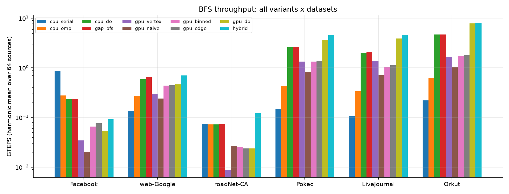
| median ms per BFS | web-Google | roadNet-CA | Pokec | LiveJournal | Orkut | |
|---|---|---|---|---|---|---|
| cpu_serial | 0.10 | 31.2 | 36.7 | 151 | 401 | 541 |
| cpu_omp (8 thr) | 0.31 | 14.9 | 37.7 | 51.2 | 126 | 188 |
| cpu_do (8 thr) | 0.36 | 6.95 | 38.0 | 8.07 | 20.7 | 25.1 |
| GAP bfs (8 thr) | 0.35 | 6.23 | 37.3 | 8.04 | 20.0 | 24.7 |
| gpu_vertex | 2.65 | 13.6 | 304 | 16.9 | 30.9 | 70.3 |
| gpu_naive | 4.45 | 17.9 | 99.4 | 27.0 | 60.4 | 116 |
| gpu_binned | 1.30 | 9.82 | 104 | 16.7 | 41.6 | 67.0 |
| gpu_edge | 1.13 | 9.91 | 113 | 16.3 | 38.2 | 64.4 |
| gpu_do | 1.56 | 9.14 | 113 | 5.90 | 10.7 | 13.3 |
| hybrid | 0.84 | 6.42 | 22.0 | 4.76 | 8.76 | 13.1 |
Bottom-up does the heavy lifting
On LiveJournal the three big levels examine 17M adjacency entries instead of 82M, and their random reads hit a 600 KB bitmap that stays in cache. gpu_do is 3–5× faster than the best top-down kernel.
Load balancing alone is not enough
Balanced top-down kernels beat the naive one by only 1.5–1.8×, because they are still limited by random reads. On the 100,000-leaf star graph, though, balancing is essential: gpu_edge is 68× faster than gpu_naive.
600 levels: the GPU pays 0.2 ms per level, the CPU pays microseconds
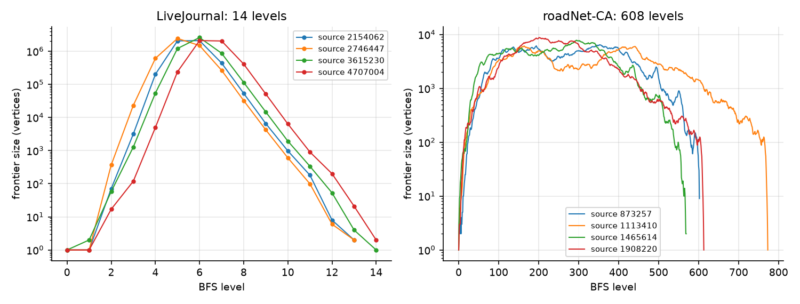
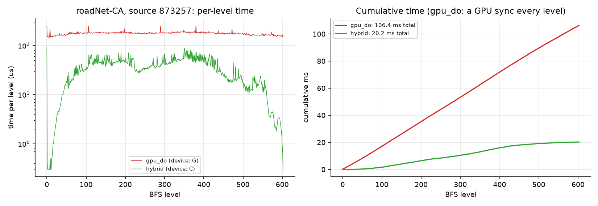
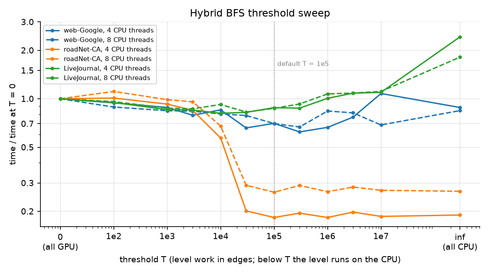
On the road network the hybrid is, in effect, a CPU BFS: no level is big enough to go to the GPU. Its value is that switching device costs nothing. GAP restricted to the 4 performance cores is equally fast there (21.1 ms vs 22.0 ms).
The efficiency cores help the social graph and hurt the road network
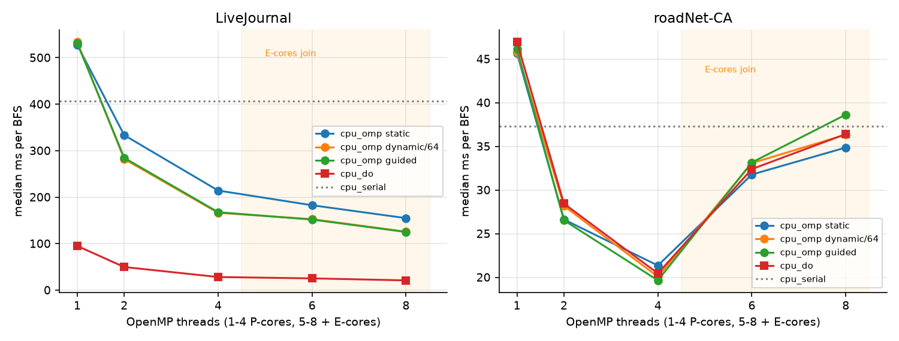
Pull beats push everywhere; the right kernel depends on the degree distribution
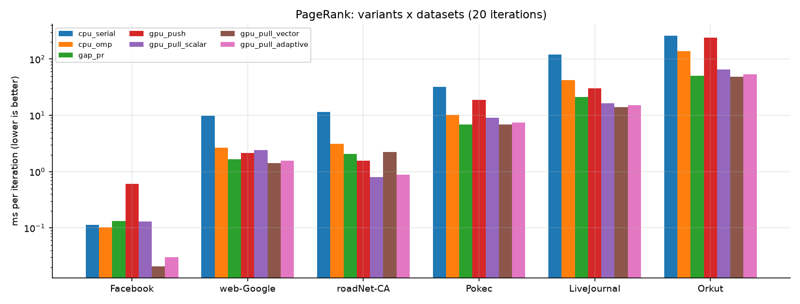
| ms per iteration | web-Google | roadNet-CA | Pokec | LiveJournal | Orkut | |
|---|---|---|---|---|---|---|
| cpu_omp (8 thr) | 0.10 | 2.67 | 3.11 | 10.2 | 42.5 | 138 |
| GAP pr (8 thr) | 0.13 | 1.66 | 2.06 | 6.84 | 21.1 | 51.1 |
| gpu_push | 0.61 | 2.13 | 1.58 | 19.0 | 30.5 | 239 |
| gpu_pull_scalar | 0.13 | 2.41 | 0.80 | 9.00 | 16.3 | 65.8 |
| gpu_pull_vector | 0.021 | 1.43 | 2.22 | 6.84 | 14.0 | 49.0 |
| gpu_pull_adaptive | 0.030 | 1.56 | 0.88 | 7.39 | 15.2 | 53.7 |
Pull wins by 1.5–4.9×
Push turns every edge into an atomic update that serialises on hubs. It was also the hardest to make accurate: 100,000 float additions into one hub all rounded the same way until we added simdgroup aggregation and a compensated second accumulator.
Vector for skewed graphs, scalar for roads
A simdgroup per vertex is 1.2–1.7× faster on social graphs but 2.8× slower on roadNet-CA, where 90% of its 32 lanes sit idle on degree-3 vertices. The adaptive kernel picks per vertex and stays within 10% of the best everywhere.
Labels matter: random order costs 2–3×, and no order is best for both algorithms
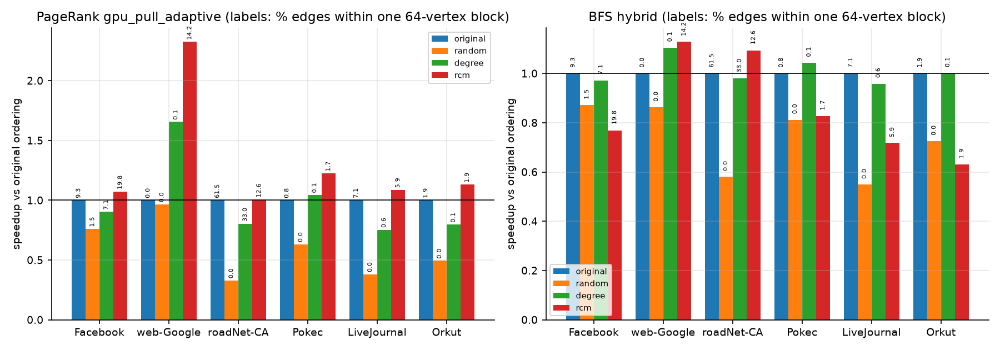
Bigger graphs give higher GTEPS, the opposite of the cache hypothesis
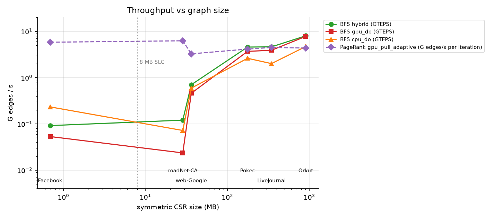
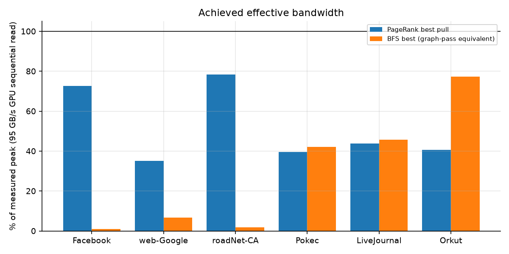
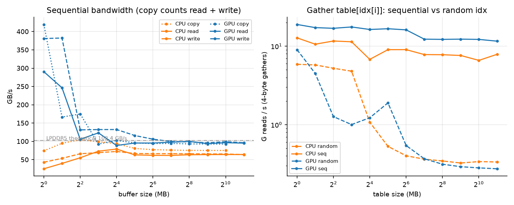
Fair comparison with other hardware: the best BFS reaches 84 MTEPS per GB/s of measured bandwidth (Orkut, hybrid). Normalising by bandwidth is the honest way to compare a 100 GB/s laptop with data-centre GPUs that have 1–3 TB/s.
Against GAP: the GPU wins BFS, GAP wins PageRank to convergence
GAP is the standard state-of-the-art CPU graph benchmark. It was built with Apple clang and libomp, and run on byte-identical copies of our graphs from the same 64 BFS sources. GAP's own verifier passed every run.
| median ms | web-Google | roadNet-CA | Pokec | LiveJournal | Orkut |
|---|---|---|---|---|---|
| GAP BFS, 8 threads | 6.23 | 37.3 | 8.04 | 20.0 | 24.7 |
| GAP BFS, 4 threads | 7.44 | 21.1 | 9.09 | 25.3 | 27.9 |
| our hybrid BFS | 6.42 | 22.0 | 4.76 | 8.76 | 13.1 |
| hybrid vs GAP (8 thr) | 0.97× | 1.70× | 1.69× | 2.28× | 1.89× |
Our CPU baseline is sound
Our own cpu_do is within 0–2% of GAP's BFS on every graph except web-Google (GAP 10% faster), so the GPU speedups are measured against a strong CPU.
GAP's PageRank exposed a lesson
GAP is 1.5–2.7× faster per iteration than our own CPU PageRank (float data, fused loops), and it updates scores in place, so it needs 29–34 sweeps where Jacobi needs 44–62. It reached convergence first on every graph, which motivated Phases 12 and 13.
In-place PageRank on the GPU: a real gain on some graphs, once compared at equal accuracy
The in-place kernel gpu_pull_gs writes each vertex's new share back immediately. Four things had to be right for it to work:
- Renormalise every sweep. In-place updates let the total score drift from 1, and that error decayed only by 0.85 per sweep. Rescaling to sum 1 fixed it (error after 20 sweeps on one test graph: 6·10−4 → 9·10−7).
- Choose the update order per graph. On the road network, vertices are split into 9 colour classes with no edges inside a class and relabelled so each class is contiguous in memory (57 → 29 sweeps). Other graphs use plain id order.
- Defer one vertex of every tight pair (Phase 13). Pairs that link only to each other and share a GPU wave stayed at Jacobi speed and fooled the stopping test. Moving one vertex of each pair to a second pass cut the worst error on Pokec 20× and on LiveJournal 96×.
- Compare at equal accuracy. In-place sweeps make the change per sweep look smaller than the remaining error, so the stopping tolerance alone is not a fair comparison. Each run below is the fastest stopping rule whose error against the exact answer is no larger than Jacobi's at tolerance 10−6, in both total (L1) error and top-1000 relative error.
| time to Jacobi's accuracy | best Jacobi GPU | Phase 12 in-place | Phase 13 in-place | speedup (13) | GAP (CPU, tol 10−6) |
|---|---|---|---|---|---|
| ego-Facebook | 9.51 ms | 11.7 ms | 12.2 ms | 0.78× | 4.50 ms |
| web-Google | 107 ms | 88.6 ms | 76.4 ms | 1.40× | 53.8 ms |
| roadNet-CA | 72.7 ms | 63.6 ms | 66.5 ms | 1.09× | 65.0 ms |
| soc-Pokec | 320 ms | 352 ms | 190 ms | 1.68× | 197 ms |
| soc-LiveJournal1 | 719 ms | 901 ms | 730 ms | 0.99× | 650 ms |
| com-Orkut | 2247 ms | 1618 ms | 1609 ms | 1.40× | 1522 ms |
At equal accuracy the in-place kernel is 1.40–1.68× faster than the best Jacobi kernel on Pokec, web-Google and Orkut, ties on LiveJournal and roadNet-CA, and loses on the tiny Facebook graph, where its extra passes cost more than they save. On Pokec it now edges out GAP (190 vs 197 ms) and ties it on roadNet-CA; GAP stays ahead on the other graphs. The deferral took Pokec from 0.91× to 1.68× and LiveJournal from 0.80× to 0.99×. The per-vertex stopping test was the fastest safe rule on web-Google and Orkut, and over-iterated on LiveJournal.
Eight things this project showed
1. Doing less work beats doing work faster
Direction-optimizing BFS gave 3–5×, more than any load-balancing scheme. Skipping edges matters more than processing them quickly.
2. Random reads set the ceiling
About 0.3 billion random reads per second on both CPU and GPU. Kernels that turn random reads into cached or sequential ones win; the rest are stuck.
3. Synchronisation can dominate
A GPU level costs ~0.2 ms however small. On the 600-level road map, GPU BFS spends three quarters of its time waiting: 113 ms end to end for 27 ms of GPU work.
4. Unified memory makes hybrids free
Moving a level between CPU and GPU costs nothing, so each level can run where it is cheapest. That gave 5.1× on roads and 1.2× on social graphs.
5. The best kernel depends on the graph
Vector for skewed degrees, scalar for uniform low degrees, adaptive when unsure. No single kernel won everywhere.
6. Vertex labels are a hidden variable
Random labels cost 2–3×. The order that helps PageRank (RCM) hurts bottom-up BFS, because it changes when early exits happen.
7. The algorithm matters as much as the hardware
Until the in-place GPU kernel existed, GAP's in-place CPU PageRank reached convergence first on every graph. Choosing Gauss–Seidel over Jacobi was worth as much as the GPU itself.
8. Parallelism changes what an algorithm means
On a GPU, "in place" only helps across waves. Diagnosing the exact vertices that lagged (a 2-cycle in Pokec) led to a targeted fix and a fairer stopping test.
| hypothesis from the project plan | outcome | evidence |
|---|---|---|
| Naive GPU BFS is under 1 GTEPS; balancing and direction-optimizing give large gains | confirmed | 0.71 GTEPS on LiveJournal; 68× on the star; 3–5× from direction-optimizing |
| GPU BFS on roadNet-CA is bound by per-level sync; hybrid wins | confirmed | 0.18 ms × 600 levels; hybrid 5.1× faster |
| Static OpenMP scheduling underperforms on 4P+4E cores | partly | 24% slower on LiveJournal; on roadNet-CA the efficiency cores slow every schedule |
| Pull beats push; vector wins on high degree, scalar on roads | confirmed | 1.5–4.9×; scalar 2.8× faster on roadNet-CA |
| Random order is much slower; RCM or degree order helps | partly | Random 1.9–3.1× slower; RCM helps PageRank but hurts BFS |
| Small graphs get higher GTEPS from the cache | wrong | GTEPS grows with size; small graphs are bound by fixed costs |
| In-place updates bring Gauss–Seidel's gain to the GPU | partly | Same-tolerance sweeps drop up to ~47%; in-wave pairs stay slow until deferred. At equal accuracy 1.40–1.68× faster on 3 graphs, a tie on 2, slower on Facebook |
What it adds up to
On a laptop GPU with 95 GB/s of memory bandwidth, a careful BFS reaches 4.6–8.0 billion edges per second on social networks, 1.7–2.3× faster than the best CPU code on the same machine and 41–46× faster than a serial search. The gains came from three ideas: skipping work (direction-optimizing), running each level where it is cheapest (the unified-memory hybrid), and matching the kernel to the degree distribution.
PageRank told a more modest story. The GPU computes each iteration 1.0–2.6× faster than GAP, but GAP's in-place updates need fewer iterations. Bringing that idea to the GPU required understanding exactly which vertices converge slowly in parallel and why; with that understanding the in-place kernel beats our best Jacobi kernel on some graphs at equal accuracy, while the sequential CPU algorithm keeps an edge on others.
The broader lesson is that on memory-bound problems the hardware sets the ceiling, but the algorithm and the data layout decide how close you get to it.
What is not covered
Limitations
- One machine, one benchmark run per configuration; run-to-run variation is about 5–10%.
- Graphs up to 234M edges, the limit of 8 GB with a 3 GB process budget.
- GPU PageRank uses 32-bit floats; results are accurate to the stated tolerances, not bit-identical.
- GPU BFS still synchronises with the CPU once per level.
- GAP's PageRank computes a slightly different vector (no dangling redistribution), so only its timing is compared.
Next steps
- Run several BFS levels per GPU submission (indirect dispatch) to remove the per-level round trip.
- Sort each adjacency list hub-first while keeping RCM labels, to get both PageRank locality and fast bottom-up exits.
- Pin OpenMP to performance cores for barrier-heavy phases.
- Extend straggler deferral from pairs to short cycles, and compress the CSR to fit larger graphs.
Run it yourself
Everything needed is in the repository: code, scripts, raw CSV results and the written report. Data is downloaded from SNAP and is not committed.
brew install libomp ./scripts/download.sh # six SNAP datasets, about 1.3 GB ./scripts/setup_python.sh # analysis environment make && make test # zero-warning build, 25 test groups ./scripts/run_all.sh # full validated benchmark, about 75 minutes ./scripts/run_all.sh gs # in-place PageRank study ./scripts/gap.sh # GAP baseline on the same graphs .venv/bin/python analysis/plots.py # regenerate all figures
Sources
- S. Beamer, K. Asanović, D. Patterson. Direction-Optimizing Breadth-First Search. SC '12, 2012.
- D. Merrill, M. Garland, A. Grimshaw. Scalable GPU Graph Traversal. PPoPP '12, 2012.
- S. Beamer, K. Asanović, D. Patterson. The GAP Benchmark Suite. arXiv:1508.03619, 2015.
- Graph500 Steering Committee. Graph500 Benchmark Specification (BFS kernel, TEPS metric).
- J. Leskovec, A. Krevl. SNAP Datasets: Stanford Large Network Dataset Collection, 2014.
- E. Cuthill, J. McKee. Reducing the Bandwidth of Sparse Symmetric Matrices. ACM National Conference, 1969.
- L. Page, S. Brin, R. Motwani, T. Winograd. The PageRank Citation Ranking: Bringing Order to the Web. Stanford InfoLab, 1999.
- M. T. Jones, P. E. Plassmann. A Parallel Graph Coloring Heuristic. SIAM J. Sci. Comput., 1993.
Built with C++17, Objective-C++ and Metal on an Apple M2. All figures and tables on this page come from the project's validated benchmark runs.